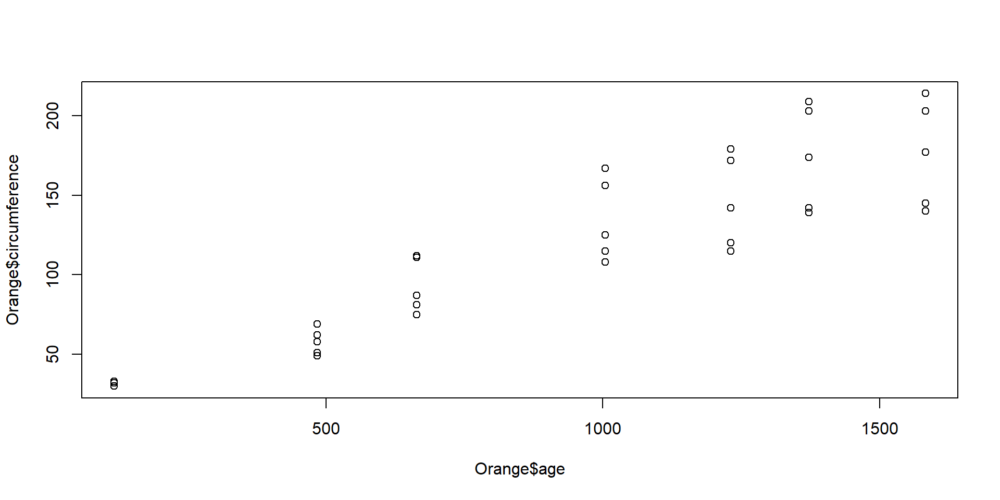
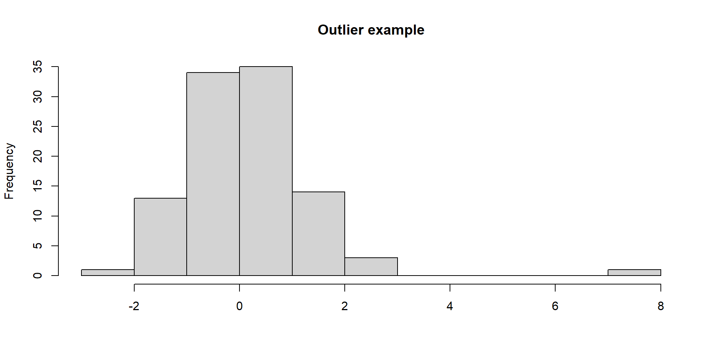

Tree age circumference
1 1 118 30
2 1 484 58
3 1 664 87
4 1 1004 115
5 1 1231 120
6 1 1372 142THIS PRESENTATION COULD NOT BE DONE WITHOUT OTHERS
Part of the materials I present are developed by Gerko Vink for the R summerschool course at Utrecht University.
Part of the materials I present are developed by Rens van de Schoot and collaborators as part of the tutorial section of his website.
Let’s start with getting data and just inspecting it.
Tree an ordered factor indicating the tree on which the measurement is made. The ordering is according to increasing maximum diameter.
age a numeric vector giving the age of the tree (days since 1968/12/31)
circumference a numeric vector of trunk circumferences (mm). This is probably “circumference at breast height”, a standard measurement in forestry.
Classes 'nfnGroupedData', 'nfGroupedData', 'groupedData' and 'data.frame': 35 obs. of 3 variables:
$ Tree : Ord.factor w/ 5 levels "3"<"1"<"5"<"2"<..: 2 2 2 2 2 2 2 4 4 4 ...
$ age : num 118 484 664 1004 1231 ...
$ circumference: num 30 58 87 115 120 142 145 33 69 111 ...
- attr(*, "formula")=Class 'formula' language circumference ~ age | Tree
.. ..- attr(*, ".Environment")=<environment: R_EmptyEnv>
- attr(*, "labels")=List of 2
..$ x: chr "Time since December 31, 1968"
..$ y: chr "Trunk circumference"
- attr(*, "units")=List of 2
..$ x: chr "(days)"
..$ y: chr "(mm)"Notice the Ordinal factor
[1] 922.1429[1] 57.48818[1] 30[1] 214 Tree age circumference
3:7 Min. : 118.0 Min. : 30.0
1:7 1st Qu.: 484.0 1st Qu.: 65.5
5:7 Median :1004.0 Median :115.0
2:7 Mean : 922.1 Mean :115.9
4:7 3rd Qu.:1372.0 3rd Qu.:161.5
Max. :1582.0 Max. :214.0 That’s a strong correlation, let’s look at it!
Ignoring that the data come from different trees
Split the dataset
Make a plot
plot(x = data.tree1$age, y = data.tree1$circumference,
type = "b", col = 1,
ylim = c(min(Orange$circumference), max(Orange$circumference)))
points(x = data.tree2$age, y = data.tree2$circumference,
type = "b", col = 2)
points(x = data.tree3$age, y = data.tree3$circumference,
type = "b", col = 3)
points(x = data.tree4$age, y = data.tree4$circumference,
type = "b", col = 4)
points(x = data.tree5$age, y = data.tree5$circumference,
type = "b", col = 5)More to come on plotting later in this course
This can be done both nicer and easier!
ggplot2 packageRThe mathematical formulation of relationship between variables can be written as
\(\mbox{observed}=\mbox{predicted}+\mbox{error}\)
or (for the greek people) in notation as \(y=\mu+\varepsilon\)
where
Regression model:
\(\text{age}_i=\alpha+\beta\cdot{\text{weight}}_i+\varepsilon_i\)
where
age, \(y\), conditional on weight, \(x\).Non-exhaustive summary:

Check errors (residuals), figure from Tabachnick and Fidell (2013)
RThe function lm() is a base function in R and allows you to pose a variety of linear models.
function (formula, data, subset, weights, na.action, method = "qr",
model = TRUE, x = FALSE, y = FALSE, qr = TRUE, singular.ok = TRUE,
contrasts = NULL, offset, ...)
NULLIf we want to know what these arguments do we can ask R:
This will open a help page on the lm() function.
age hgt wgt bmi hc gen phb tv reg
3 0.035 50.1 3.650 14.54 33.7 <NA> <NA> NA south
4 0.038 53.5 3.370 11.77 35.0 <NA> <NA> NA south
18 0.057 50.0 3.140 12.56 35.2 <NA> <NA> NA south
23 0.060 54.5 4.270 14.37 36.7 <NA> <NA> NA south
28 0.062 57.5 5.030 15.21 37.3 <NA> <NA> NA south
36 0.068 55.5 4.655 15.11 37.0 <NA> <NA> NA south
37 0.068 52.5 3.810 13.82 34.9 <NA> <NA> NA southHeight, weight, head circumference and puberty of 748 Dutch boys.
Call:
lm(formula = bmi ~ wgt, data = mice::boys)
Coefficients:
(Intercept) wgt
14.5401 0.0935 Provides limited output. We can get more.
Store the regression in an object and call the summary
Call:
lm(formula = bmi ~ wgt, data = mice::boys)
Residuals:
Min 1Q Median 3Q Max
-3.7891 -1.3289 -0.1994 1.2046 7.9267
Coefficients:
Estimate Std. Error t value Pr(>|t|)
(Intercept) 14.540108 0.120375 120.79 <2e-16 ***
wgt 0.093500 0.002626 35.61 <2e-16 ***
---
Signif. codes: 0 '***' 0.001 '**' 0.01 '*' 0.05 '.' 0.1 ' ' 1
Residual standard error: 1.843 on 725 degrees of freedom
(21 observations deleted due to missingness)
Multiple R-squared: 0.6362, Adjusted R-squared: 0.6357
F-statistic: 1268 on 1 and 725 DF, p-value: < 2.2e-16Note. There is much more in the object even. You could investigate it!
This will produce many plots! Let’s look at some.
"lm"?The function plot() is called, but not used. Instead, because the linear model has class "lm", R searches for the function plot.lm().
If function plot.lm() would not exist, R tries to apply function plot() (which would have failed in this case because plot requires x and y as input)
plot.lm() is created by John Maindonald and Martin Maechler. They thought it would be useful to have a standard plotting environment for objects with class "lm".
Since the elements that class "lm" returns are known, creating a generic function class is straightforward.
How would you compare these two?
Call:
lm(formula = bmi ~ wgt, data = mice::boys)
Residuals:
Min 1Q Median 3Q Max
-3.7891 -1.3289 -0.1994 1.2046 7.9267
Coefficients:
Estimate Std. Error t value Pr(>|t|)
(Intercept) 14.540108 0.120375 120.79 <2e-16 ***
wgt 0.093500 0.002626 35.61 <2e-16 ***
---
Signif. codes: 0 '***' 0.001 '**' 0.01 '*' 0.05 '.' 0.1 ' ' 1
Residual standard error: 1.843 on 725 degrees of freedom
(21 observations deleted due to missingness)
Multiple R-squared: 0.6362, Adjusted R-squared: 0.6357
F-statistic: 1268 on 1 and 725 DF, p-value: < 2.2e-16
Call:
lm(formula = bmi ~ wgt + age, data = mice::boys)
Residuals:
Min 1Q Median 3Q Max
-3.4704 -0.9670 -0.1503 0.8821 4.6042
Coefficients:
Estimate Std. Error t value Pr(>|t|)
(Intercept) 14.468566 0.090222 160.37 <2e-16 ***
wgt 0.235420 0.006271 37.54 <2e-16 ***
age -0.566205 0.023758 -23.83 <2e-16 ***
---
Signif. codes: 0 '***' 0.001 '**' 0.01 '*' 0.05 '.' 0.1 ' ' 1
Residual standard error: 1.381 on 724 degrees of freedom
(21 observations deleted due to missingness)
Multiple R-squared: 0.7962, Adjusted R-squared: 0.7956
F-statistic: 1414 on 2 and 724 DF, p-value: < 2.2e-16Analysis of Variance Table
Model 1: bmi ~ wgt
Model 2: bmi ~ wgt + age
Res.Df RSS Df Sum of Sq F Pr(>F)
1 725 2462.3
2 724 1379.8 1 1082.5 568 < 2.2e-16 ***
---
Signif. codes: 0 '***' 0.001 '**' 0.01 '*' 0.05 '.' 0.1 ' ' 1Reduction of sum of squares is so much you would want to add age
Lower AIC is better so choose the model that includes age